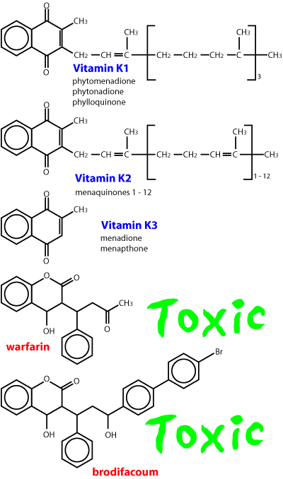
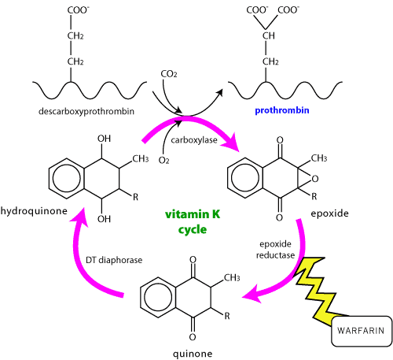

There are many drugs used in people to break clots down and restore blood supply to areas distal to the clot (mainly used in myocardial infarction). These are not usually used in animals because they are very expensive and the damage is very gross / irreversible when the animal is presented for treatment (drugs usually have to be given within 3 hours to be effective). In veterinary practice it is usual to try to prevent further clotting using anticoagulants or antiplatelet drugs. All these drugs can cause massive bleeding - animals have completely bled out after their use. As a broad generalisation, anticoagulants are used to treat venous thrombosis, antiplatelet drugs for arterial thrombosis.

Aspirin, warfarin and heparin prevent clots; tissue plasminogen activator breaks them down.
The normal response to haemorrhage is
In veterinary practice, bleeding can be reduced using
The only common drug is heparin. It is a high molecular weight glycosaminoglycan isolated from cattle lungs or pigs’ guts. Only five sugar residues are required for action, so low molecular weight heparins are sometimes used. It is rapidly metabolised (2 hours). Clotting times are usually monitored during use.
Binds to antithrombin III to activate it. The complex rapidly inactivates circulating thrombin, and to a lesser extent factors XIIa, XIa, IXa and Xa.
•maintaining iv catheter patency - catheters are flushed with saline containing a small amount of heparin
•prevention of clotting in response to other intravascular hardware (mainly people at the moment)
•venous thrombosis
•disseminated intravascular coagulation
bleeding, hypersensitivity reactions (reduced with low molecular weight heparins)
liver disease, haemorrhage (except DIC)
do not give im - haematoma formation. iv is best.
In overdose give protamine sulphate, 1mg/100units heparin by slow iv injection (causes hypotension if given fast).
These are nearly all coumarins, of which warfarin was the first to be widely used (as a rat poison). Some rats have developed resistance to warfarin, and there are a variety of second generation coumarins such as brodifacoum used as rat poisons now. These generally have a much longer duration of action. The most modern drugs in this class (not in NZ yet) have half lives of weeks in dogs. (Toxicology)

Warfarin is typical of the coumarin group. It is a stable analogue of vitamin K. Although widely used as an anticoagulant in people, it is mainly seen as a poison in veterinary practice. It competes with vitamin K for the recycling enzymes and inhibits vitamin K dependent clotting factors (prothrombin, VII, IX, X).

venous thrombosis
thromboembolism in cats
disseminated intravascular coagulation
navicular disease ?
malnutrition, haemorrhage
highly plasma protein bound - can be displaced by other highly bound drugs eg phenylbutazone.
Since it interferes with the production of clotting factors, existing stocks must be used up before any anticoagulant effect is seen - usually 8 - 10 hours.
bleeding
In severe cases a transfusion of fresh blood ± intensive care may be necessary. Phytomenadione (vitamin K1, phytonadione USAN, phylloquinone, etc.) competes with warfarin for the binding site (other forms of vitamin K are much less effective). In mild cases it will start to work in about 30 mins after iv injection but no signs of improvement may be evident for more than 2 hours. It is usual to continue with oral K1 for 10 - 14 days after warfarin overdose; 30 days after brodifacoum. Assessing prothrombin times will show if treatment can be stopped.
Vitamin K comes in many different forms, all of which have many different names. K1 is probably the only one which works in dogs, avoid K3 (menadione, menaphthone) even though it is cheap (it works in chickens and is added to their feed by the ton).
Walker and Royston, 2002, British Journal of Anaesthesia, Thrombin generation and its inhibition: a review of the scientific basis and mechanism of action of anticoagulant therapies. 88, 848 - 863 All you ever wanted to know about coagulation and more!
These are used to prevent the formation of thrombi. Aspirin is the only drug widely used in veterinary practice, usually for thrombo-embolism in cats. It inhibits cyclo-oxygenase in platelets and blocks production of thromboxane A2 (which causes platelet aggregation). It can cause bleeding. The dose required is usually low enough to avoid other side effects. Since it irreversibly acetylates platelets, it is only given once every 3 - 4 days.
Clopridogrel and pasugrel (platelet P2Y12 receptor antagonists) are sometimes used instead of aspirin in people. Expensive.
Prostacyclin (PGI2, epoprostenol) ia a physiological antagonist of thromboxane A2. Very expensive.
Not often used in veterinary practice - too expensive. The dose is critical - too much and the animal will bleed out.
Alteplase is recombinant human tissue plasminogen activator. It breaks clots down and is much better in people than streptokinase or urokinase. It can cause bleeding so do not use if there has been recent trauma or a major operation, hypertension, bacterial endocarditis or acute pancreatitis. Plasmin is starting to be used in people instead.
Streptokinase is isolated from Streptococcus haemolyticus B strain. It is antigenic and may produce hypersensitivity. Binds to plasminogen but not preferentially bound to fibrin and will lyse everything . It is not a PA inhibitor. It is degraded by the reticuloendothelial system. Urokinase is isolated from human renal cells Does not need to bind to be active. Not preferential to fibrin, much more expensive than streptokinase, cleared by the liver.
Stanozolol is an anabolic steroid which may have fibrinolytic properties that may be helpful in feline aortic thromboembolism. (clinical studies yet to be done).
These drugs are not given to animals directly but used to stop blood clotting during collection for storage (in fridge) and infusion later. They work by chelating calcium. Long term storage is largely for RBCs, clotting factors only last a few hours (plasma must be separated rapidly and frozen to preserve clotting factors).
With acid citrate dextrose, RBCs keep 3 weeks (in fridge) - the citrate is metabolised in the TCA cycle, dextrose in RBCs. Citrate phosphate dextrose - RBCs keep 4 weeks, citrate - RBCs keep 3 days.
Since these drugs chelate calcium, it may be necessary to give extra calcium to ensure normal clotting after infusing large amounts of blood (give 2mmol Ca++ to 4 units blood).
Ethylenediaminetetraacetic acid (always called EDTA) damages platelets - it is used for in vitro blood samples for haematology only. (It is only used parenterally in severe cases of heavy metal poisoning - see toxicology notes).